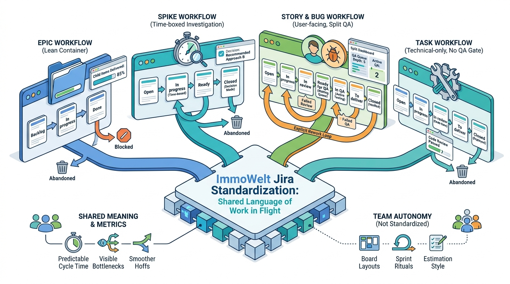

Ways of Working
Jira as the Issue Tracker and a Unified Workflow Standard Across Teams

Image generated by Google Gemini (gemini-3-pro-image-preview)
Ways of Working

Image generated by Google Gemini (gemini-3-pro-image-preview)